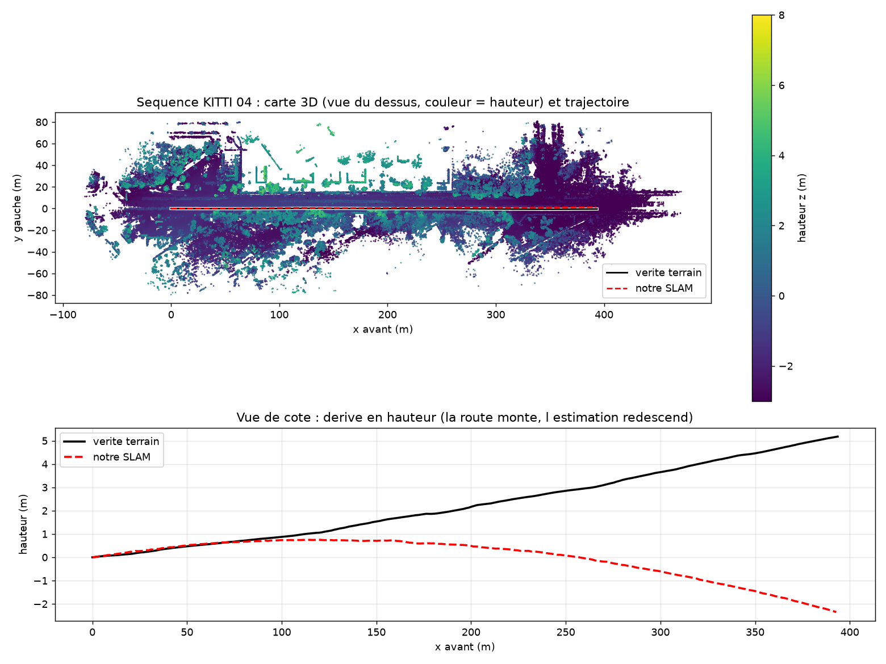
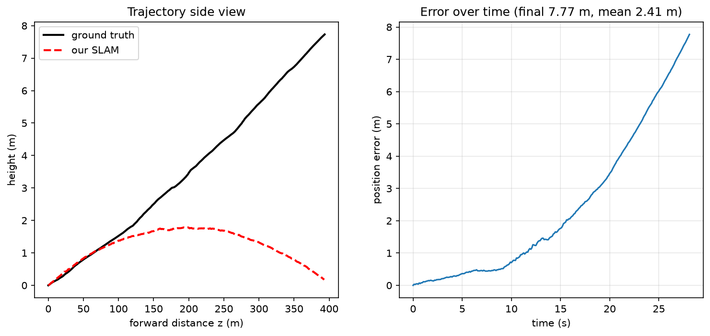
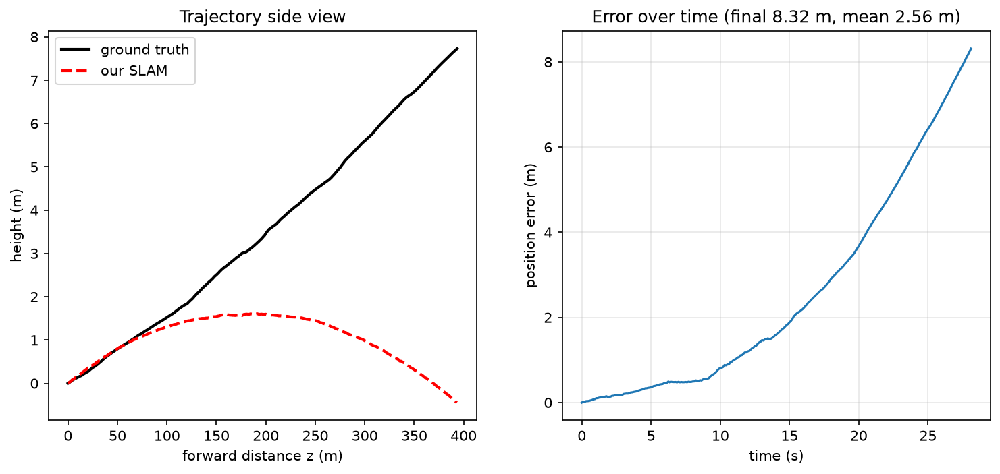
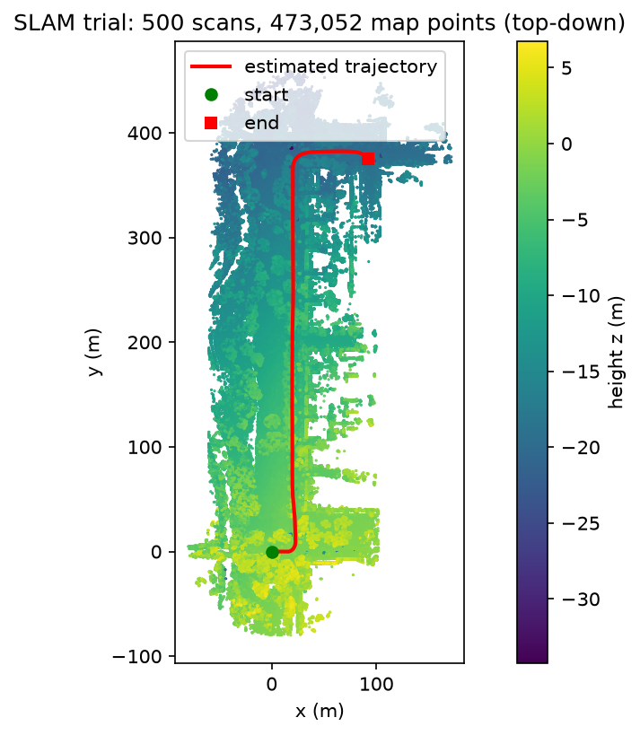
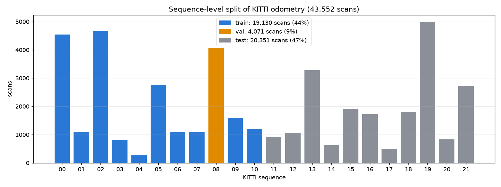

1. Videos of the runs
The map grows scan by scan; red is our trajectory, black the ground truth.
Sequence 04 (train), 271 scans, 27 s, 394 m, compared with the ground truth.
Sequence 08 (validation), first 500 scans (50 s), urban loop. No ground-truth poses are available locally, so only the estimate is shown.
2. Interactive 3D map
Drag to rotate, scroll to zoom, right-drag to pan. Colour is height.
3. Sequence 04: accuracy against ground truth

Top: map seen from above with both trajectories, almost on top of each other. Bottom: side view. The road climbs and the estimate stays flatter; this pitch drift is most of the error.

Voxel 0.8 m: error grows slowly and stays under 0.5 m for the first 9 s.

Voxel 0.5 m: same behaviour; the finer grid does not remove the vertical drift.
| Voxel | ATE RMSE | Final error | KITTI drift | Rotation drift | Time per scan* |
|---|---|---|---|---|---|
| 0.5 m | 0.42 m | 8.3 m | 1.05 % | 0.0059 deg/m | 170 ms |
| 0.8 m | 0.44 m | 7.8 m | 1.04 % | 0.0056 deg/m | 94 ms |
* Measured on 100 scans of sequence 00. The KITTI sensor period is 100 ms, so voxel 0.8 m runs in real time.
4. Sequence 08: validation run

First 500 scans of sequence 08 (50 s): map seen from above with the estimated trajectory, about 380 m north then a right turn.
| Scans | Estimated path | Registration RMSE | Map points (0.5 m) | Time per scan* |
|---|---|---|---|---|
| 500 | 468.6 m | 0.173 m | 473,052 | 284 ms |
Accuracy cannot be computed yet: the sequence 08 ground-truth poses (data_odometry_poses.zip) are not downloaded. The estimated height falls by about 19 m over the first 400 m, which looks like the same pitch drift seen on sequence 04. Loop closure and pose-graph optimisation are the planned fix.
* Measured on a throttled laptop; sequence 00 at the same voxel size ran at 94 ms.
5. Data split

The split is by sequence, so near-identical consecutive scans never cross between splits. The SLAM has no learned weights: train is used to tune parameters, val to choose them, and test is run once (its ground truth is withheld by KITTI).
| Split | Sequences | Scans | Share | Ground truth |
|---|---|---|---|---|
| train | 00–07, 09, 10 | 19,130 | 44 % | public |
| val | 08 | 4,071 | 9 % | public |
| test | 11–21 | 20,351 | 47 % | withheld (KITTI benchmark) |
6. Pipeline
Algorithms, reasons and the input/output of every stage: docs/slam_pipeline.md in the repository.
Regenerate
python scripts/make_split.py python scripts/plot_split.py python scripts/run_slam_trial.py --sequence 08 --frames 500 --voxel 0.8 \ --velodyne-dir dataset/sequences/08/velodyne --out outputs/seq08_val python scripts/view_results.py --dir outputs/seq08_val python scripts/make_video.py --dir outputs/seq08_val --sequence 08 \ --velodyne-dir dataset/sequences/08/velodyne python scripts/export_web_map.py --dir outputs/seq04_v0.8 --name seq04 --calib data/kitti04/04_calib.txt python scripts/export_web_map.py --dir outputs/seq08_val --name seq08